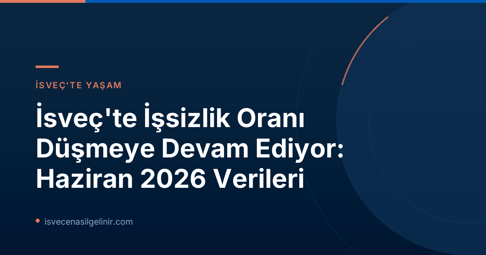

Her ay yayımlanan işgücü piyasası istatistikleri, İsveç ekonomisinin önemli göstergelerinden biridir. Arbetsförmedlingen (İsveç İş ve İşçi Bulma Kurumu) tarafından açıklanan Haziran 2026 verileri, ülkedeki işsizlik oranlarında devam eden düşüşü gözler önüne seriyor. Bu düşüş, daha önceki tahminlerle uyumlu olup, hem yerleşik halk hem de İsveç'e göç etmeyi düşünenler için olumlu bir tablo sunmaktadır.
Genel Bakış: İşsizlik Oranlarında Beklenen Düşüş
Haziran 2026 itibarıyla İsveç'te 344.000 kişi kayıtlı işsiz olarak belirlendi. Bu rakam, bir önceki yılın aynı ayı olan Haziran 2025'e göre 22.000 kişilik önemli bir düşüşe işaret ediyor. Kayıtlı işgücü içindeki işsizlik oranı ise yarım puan azalarak %6,9'dan %6,4'e gerilemiştir. Bu istikrarlı iyileşme, İsveç'in ekonomik dayanıklılığını ve işgücü piyasasının adapte olma yeteneğini göstermektedir.
İsveç İşgücü Piyasasında Anahtar Gelişmeler
İsveç'te iş arayışında olanlar ve ülkeye entegrasyon sürecinde olanlar için istihdam piyasasındaki güncel trendleri takip etmek büyük önem taşır. İş bulma stratejileri ve İsveç yaşamına adaptasyon süreçleri hakkında daha fazla bilgi edinmek için İsveç Vatandaşlık Sınavı ile ilgili kaynaklara göz atabilirsiniz.
Detaylı İstatistikler: Haziran 2026 Verileri
Arbetsförmedlingen'in faaliyet istatistikleri, Haziran 2026'da işgücü piyasasının genel durumuna dair kapsamlı bilgiler sunmaktadır. İşte temel göstergeler:
| Gösterge | Haziran 2026 | Haziran 2025 | Değişim |
|---|---|---|---|
| Kayıtlı İşsiz Oranı (İşgücünün %'si) | %6,4 | %6,9 | ▼ %0,5 |
| Toplam Kayıtlı İşsiz Sayısı | 344.357 | 366.496 | ▼ 22.139 |
| Genç İşsiz Oranı (18-24 yaş, İşgücünün %'si) | %7,3 | %7,8 | ▼ %0,5 |
| Toplam Genç İşsiz Sayısı (18-24 yaş) | 39.134 | 41.939 | ▼ 2.805 |
| Uzun Süreli İşsiz Sayısı (≥ 12 Ay) | 148.497 | 151.979 | ▼ 3.482 |
| Açık İşsiz Sayısı | 193.650 | 201.528 | ▼ 7.878 |
| Aktivite Destek Programındaki Kişi Sayısı | 150.707 | 164.968 | ▼ 14.261 |
| Yeni İş Arayan Olarak Kayıt Olan Kişi Sayısı | 42.980 | 44.099 | ▼ 1.119 |
| İşe Yerleşen Kişi Sayısı (Arbetsförmedlingen Aracılığıyla) | 35.673 | 32.405 | ▲ 3.268 |
| İşten Çıkarma İhbarı Alan Kişi Sayısı | 2.857 | 4.606 | ▼ 1.749 |
Tablodan da görüldüğü üzere, birçok önemli kategoride işsizlik rakamlarında olumlu yönde gelişmeler yaşanmıştır.
Bölgesel Farklılıklar ve Demografik Gruplar
İşsizlik oranlarındaki düşüş genel bir trend olsa da, İsveç genelinde ve farklı demografik gruplar arasında bazı farklılıklar gözlemleniyor. Pozitif gelişme hem erkekler hem de kadınlar, hem yurt içinde hem de yurt dışında doğanlar için geçerlidir. Tüm illerde düşüş yaşanmasına rağmen, bölgesel farklılıklar hala mevcuttur:
- En Yüksek İşsizlik Oranına Sahip İller: Skåne (%8,4), Södermanland (%8,0) ve Västmanland (%7,8).
- En Düşük İşsizlik Oranına Sahip İl: Norrbotten (%3,4).
Genç ve Uzun Süreli İşsizlikteki İyileşme
Genç işsizliği (18-24 yaş arası) de olumlu bir seyir izlemektedir. Haziran ayında kayıtlara geçen 39.000 genç işsiz, geçen yılın aynı ayına göre yaklaşık 3.000 kişilik bir azalmayı temsil etmektedir. Bu düşüş, gençlerin işgücü piyasasına daha kolay dahil olabildiklerini göstermektedir.
Uzun süreli işsizlik (en az bir yıl işsiz kalan kişiler) de kayda değer bir düşüş göstermiştir. Haziran 2026'da bu grupta 148.000 kişi bulunurken, bu rakam 2025'teki 152.000 kişiye kıyasla 4.000 kişilik bir azalmadır. Uzun süreli işsizlerin yaklaşık yarısı Avrupa dışı ülkelerde doğan kişilerden oluşmaktadır. Ancak, son dönemde bu grubun, yerli doğumlu uzun süreli işsizlere kıyasla daha olumlu bir gelişim sergilediği belirtilmiştir. Spesifik olarak, Haziran 2026'da neredeyse 68.000 Avrupa dışı doğumlu kişi en az on iki aydır işsiz durumdaydı; bu sayı geçen yıla göre 6.000 kişilik bir düşüşü ifade etmektedir.
İşgücü Piyasası İstatistiklerinin Anlamı
Arbetsförmedlingen'in yayımladığı bu istatistikler, kurumun kendi faaliyet verilerine dayanmaktadır. İşsizlik tanımı, "açık işsizler" ile "aktivite destek programlarındaki iş arayanlar"ı kapsar. İşgücü büyüklüğünün hesaplanma metodolojisinde 2024 yılında yapılan bir değişiklik nedeniyle, 2026 istatistikleri 16-66 yaş aralığını, 2025 istatistikleri ise 16-65 yaş aralığını kapsamaktadır. Bu istatistiklerin İsveç'in resmi istatistikleri olmadığını (resmi veriler Statistiska centralbyrån SCB tarafından yayımlanır) unutmamak önemlidir.
Toplum ve birey için olumlu etkilere sahip olan bu düşüş trendi, İsveç'in sürekli adaptasyon ve gelişme kapasitesini bir kez daha ortaya koymaktadır. İşsizlik oranlarındaki azalma, daha fazla bireyin ekonomik olarak aktif olmasını ve topluma katkıda bulunmasını sağlamaktadır.
Referanslar:
İsveç'te Kariyer Fırsatları ve Entegrasyon
İsveç işgücü piyasasındaki bu olumlu rüzgarlardan faydalanmak ve İsveç'teki yaşamınıza dair adımları atmak için daha fazla bilgiye mi ihtiyacınız var? İsveç’te yaşam, çalışma izinleri, vatandaşlık süreci ve dil öğrenimi gibi konularda uzman rehberliğimizden yararlanın.